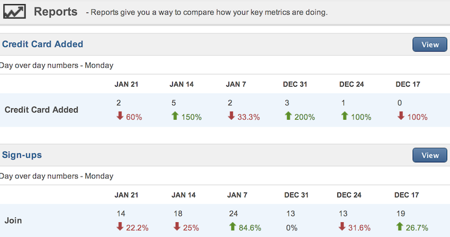

Metrics & Growth
How do we grow revenue?
Add features?
Cold-calling?
Magic?
No.
We can grow revenue right now with very little effort.
WTF? How!?
We just need to measure a few simple things...
Acquisition
Potential customers visiting site
Ads, blog post, guest posts, newsletters are all marketing channels
The effectiveness of each channel needs to be measured!
Improve conversions by identifying & optimizing most cost effective channels
Activation
A visitor is impressed and decides to join
This needs to be measured against marketing channels
Improve conversions by fleshing out marketing material and split testing sign-up flow
Use tools like Olark to help reassure visitors
Send follow-up emails after 3, 7, 30 days
Retention
The customer continues paying
Improve conversions here by improving the product
Always measure new features against effect on retention
Stick to MVP for new features, then iterate
Remove features that don't make us money
If people cancel, we ask them why
Improve upgrade flows
Referrals
Make the customers experience so awesome that they tell there friends
Track and improve referrels
Revenue
Measure life-time value of customers
Compare this value to cost of new joins by channel
Optimize conversions through entire funnel
Where we are:
Where we need to be:

How do we get there?
Lifetime value - Cost of aquisition = Profit
Calculate lifetime value using mixpanel or internal tools
Calculate customer aquisition by channel
Tag all new users with original referrer
Identify top performing channels, insert money
Focus on iterating conversions throughout funnel
Growth
KPI's
Already done with Mixpanel
